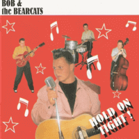

Bob and the Bearcats - Hold On Tight! (Album, 1994)
01 - Hold On Tight (3:07)
02 - If You Want My Lovin' (2:10)
03 - Ain't Got No Bail (2:09)
04 - Bad Bad Boy (2:29)
05 - Two Timin' People (2:40)
06 - Love Me (2:04)
07 - 6120 Boogie (2:55)
08 - Speed Limit (2:07)
09 - Red Hot Mama (2:05)
10 - Gonna See My Baby (2:23)
11 - Walkin' In My Sleep (2:47)
12 - Reconsider Baby (3:18)
13 - Justine (1:43)
14 - Run Tough, Run Hard (2:30)
15 - B-i-bickey-bi-bo-boo (2:11)
16 - Cattlehead Stomp (2:47)
17 - Your Magic Charms (2:42)
18 - Batman (2:33)
19 - My Big Fat Baby (2:03)
20 - Big Hunk 'o' Love (2:07)
21 - Say Hey Little Lover (2:00)
22 - Who Gets Your Lovin' (2:23)
23 - Don't Be Cruel (2:14)
© Pollytone Records :: [PEPCD106]
Notes
Review
101/366 (Project 366)
Very excellent band with an awesome music album.
Bob and the Bearcats consisted of the greatest musicians: Bob Butfoy, Darrel Higham, Nick Hoadley and Les Curtis. Perhaps, that is why the album is so smooth and groovy. Tracks with different moods, but always about classic sound of Rockabilly and Rock'n'Roll. There are some wild tunes, some really mad ones, lovely and rockin' songs, very enjoyable and just as mighty as possible. Absolutely charm vocals, enchanting guitar, solid double bass and peppy drums. Very handsome sound, very attractive, harmonious, unified and balanced. The first track "Hold On Tight" is very playful. The second song "If You Want My Lovin'" is also at a fairly fast pace. Furious guitar solos and great accompaniment. Chicly! Third track "Ain't Got No Bail" is Rock'n'Roll with fifties mood. The next song "Bad Bad Boy" is rockin' and rollin' Rockabilly tune. The fifth composition "Two Timin' People" is calmer than the previous ones, with good support by instruments. The next song is more punchy, "Love Me" - energetic, sparkling, but quite melodic and beautiful. Seventh song "6120 Boogie" is a really nice, good looking instrumental. Very beauty and skillful tune with vintage atmosphere. "Speed Limit" is one more excellent cover version of rockin' and rollin' classics. Made very specific to the band's own style. "Red Hot Mama", perhaps, is lovely Rock'n'Roll boppin' tune. While "Gonna See My Baby", maybe, is one of the coolest tracks on the album. So power, so catchy, so stylish, so perfect. The eleventh song "Walkin' In My Sleep" very picturesque, from all sides and meanings. Pretty interesting composition and performance. "Reconsider Baby" is a strollin' ballad walk. "Justine" - astonishing cover version, so much energy and bright sensations. "Run Tough, Run Hard" is a smooth track of the band's style. "Cattlehead Stomp" is so instrumental nest, chic and beauty. Very saturated with the melody and emotional pulse of the guitar. Because of this, the next "Your Magic Charms" sounds especially atmospheric. With a charming voice and surely loving talk - sensations are rockin', shakin', rollin' and groovin' around. Very exciting tune! Relatively easygoing, but very exciting. Fancy rockabilly track is next song - "My Big Fat Baby". It is pleasant to listen to a tune, a melody and an interesting (curious) text. Wild "Big Hunk'O'Love" with fad arrangements and even with piano in use. Something crazy and rather wild. "Say, Hey Little Lover" is a dreamy and fab track. A bit hard rollin' track "Who Gets Your Lovin'" goes good and nice. Rocking and pushy. "Don't Be Cruel" is a quite good cover version, actually. Sounds classy.
I like arrangements and instrumental sound. Quite magic and technical. I like vocals. Quite attractive, perky and positive. Changes in the tempo and mood in some songs are interesting, the emotional presentation of the material is interesting, and much more - what will open with each new listening. Many rockin' and rollin' authentic tunes, enthusiasm, classic Rockabilly, sometimes mad mood are very good points.